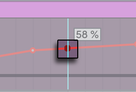

40. Accessibility and Keyboard Navigation
Live 12 offers new accessibility features on both macOS and Windows, including support for screen readers and other assistive technologies that use the accessibility communication protocols native to those operating systems. Additional improvements include a high-contrast option for new themes, streamlined keyboard navigation, and a more organized Settings menu.
While most of Live’s views, controls, and devices work with screen readers, some device features have not been optimized to do so, such as the Modulation Matrix in Wavetable and some advanced parameters in Operator. Several other Live and third-party features are not yet supported for screen reader use, including:
- Browser tagging and filters
- MPE editing in Clip View
- Max for Live
- Some third-party plug-ins
For answers to common questions about Live’s accessibility support, please refer to the Accessibility in Ableton Live FAQ in the Knowledge Base.
40.1 Menu and Keyboard Navigation Settings
Various accessibility and keyboard navigation options can be found in Live’s Settings, as well as in the Options and Navigate menus.
In addition to improved keyboard navigation, various keyboard shortcuts are available for common actions and commands.
40.1.1 Using Tab for Navigation
When the Use Tab Key to Move Focus option is enabled via the Navigate menu or Live’s Display & Input Settings, the Tab key can be used to navigate in the following ways:
- Tab moves to the next control.
- ShiftTab moves to the previous control.
The Tab key can also be used to navigate between controls in the Session and Arrangement mixers via these shortcuts:
- CtrlTab (Win) / OptionTab (Mac) moves to the next control in the same row.
- CtrlShiftTab (Win) / OptionShiftTab (Mac) moves to the previous control in the same row.
When Use Tab Key to Move Focus is off, pressing the Tab key switches between Session and Arrangement View, as in previous versions of Live.
In addition to using Tab to move focus, the following navigation options are also available:
- Wrap Tab Navigation - When this option is enabled, pressing Tab moves focus back to the first control after reaching the last one in an area instead of stopping. If the first control is selected, pressing ShiftTab moves focus to the last control. This option can be enabled via the Navigate menu or the Display & Input Settings.
- Move Clips with Arrow Keys - This option is enabled by default and lets you use the left and right arrow keys to move selected clips and/or the time selection in Arrangement View. This behavior can be switched off in the Display & Input Settings if needed. When off, pressing the left arrow key collapses the time selection to the start point, while pressing the right arrow key collapses the time selection to the end point.
40.1.2 Settings Menu
To open Live’s Settings, use the shortcut Ctrl, (Win) / Cmd, (Mac).
The Tab and ShiftTab keys can be used to navigate between options inside the Settings tabs. These shortcuts work regardless of whether the Use Tab Key to Move Focus option is active or not.
When a command is focused in any of the Settings tabs, the up and down arrow keys can be used to change the state of a toggle, make value adjustments, or cycle through the available options for a given command. It is also possible to use the Enter key to switch between toggle states.
To navigate between the different tabs in the Settings Page Chooser, use CtrlTab (Win) / OptionTab (Mac) and CtrlShiftTab (Win) / OptionShiftTab (Mac) or the up and down arrow keys when the chooser is focused. If the keyboard focus is on the first control of any given Settings tab, use the ShiftTab shortcut to return the focus to the Settings Page Chooser.
You can close the Settings window by using the Esc key.
Note that if you choose a new preferred language for the UI in the Display & Input Settings, Live must be restarted for the change to take effect.
40.1.3 Options Menu
You can find further accessibility settings in Live’s Options menu, which contains an Accessibility sub-menu. To access this sub-menu with the keyboard, use AltO (Win) / VOM then O with VoiceOver (Mac).
The sub-menu contains several entries for enabling certain screen reader announcements, such as Speak Menu Commands, Speak Minimum and Maximum Slider Values, and Speak Time in Seconds.
40.1.4 Speak Help Text
Most controls and areas in Live include descriptive text, accessible via the Info View. On Windows, you can enable screen reader announcements for these descriptions by activating the Speak Help Text option in your preferred screen reader. On macOS, you can do so by turning on help text in the VoiceOver Utility’s verbosity settings. You can also access this option manually by pressing VOShiftH.
40.2 Audio Setup
To configure your audio settings in Live, open the Settings menu using the shortcut Ctrl, (Win) / Cmd, (Mac), then use the arrow keys to navigate to the Audio page.
You can use Tab to move between the options on the Audio page and start configuring your audio device settings.
Audio setup varies between macOS and Windows. On macOS, Live’s input and output can be connected to any CoreAudio device. You can also select other drivers from the Driver Type drop-down menu if needed. On Windows, you can select your preferred driver, for example ASIO4ALL, and manage connected devices via the driver’s own program.
40.3 Connecting MIDI Devices
Live automatically detects connected MIDI devices, many of which require no further configuration.
Some MIDI controllers also come with control surface scripts to help integrate them into Live’s workflows. Note that screen reader support for control surfaces varies between third-party manufacturers, so some controllers may not be optimized for use with screen readers.
The MIDI section in the Link, Tempo & MIDI page has six Control Surface drop-down menus, where you can select control surfaces using the dedicated keyboard navigation options. You can also specify the input and output port settings for each selected control surface.
To learn more about MIDI configuration in Live, check out the MIDI and Key Remote Control chapter.
40.4 Navigating in Live
You can navigate through most of Live’s menus, views, and controls using the computer keyboard. Note that the Use Tab Key to Move Focus option in the Navigate menu or Display & Input Settings must be enabled if you want to use any of the Tab-based shortcuts mentioned in this section.
40.4.1 Navigate Menu
You can use the Navigate menu to access all of Live’s main views and other navigation options. Most of the menu’s entries also come with corresponding keyboard shortcuts. To open the Navigate menu, use AltN (Win) / VOM then N with VoiceOver (Mac).
40.4.1.1 Control Bar - Alt0 (Win) / Option0 (Mac)
The Control Bar consists of various project settings, transport controls, mouse and keyboard tools, and status views. The controls are organized into accessible groupings; you can use Tab and ShiftTab to navigate between them with Speak Help Text activated to learn about each option.
The Control Bar remembers your last-focused control and focus returns to this control when you come back to the Control Bar from another view.
40.4.1.2 Session View - Alt1 (Win) / Option1 (Mac)
The Session View is Live’s non-linear approach to music-making. There are four main sections in this view:
Track Title Bars are displayed for all tracks in your Set. To navigate between track title bars, use the left and right arrow keys. Right-clicking on a track title bar opens the context menu, which contains useful track-related commands and their corresponding keyboard shortcuts.
Clip Slots are grouped by tracks (vertical from top to bottom) and scenes (horizontal from left to right). Slots on audio tracks can contain audio clips, and slots on MIDI tracks can contain MIDI clips. When focused on a clip slot in a MIDI track, you can insert an empty MIDI clip using CtrlShiftM (Win) /CmdShiftM (Mac). You can launch a selected clip by pressing Enter. If Live’s transport is running, the clip will begin playing based on the current setting in the Control Bar’s quantization menu. Note that while clip slots also appear in return tracks, these slots cannot contain or launch any clips.
Scenes can be used to trigger adjacent clips in different tracks at the same time via the Main track scene numbers, which can be navigated between using the up and down arrow keys. Scenes can be launched with the Enter key.
The Mixer contains routing and mixer options for each track. You can customize which mixer elements are shown using the Mixer Controls sub-menu in the View menu or using the drop-down menu next to the Mixer view control in the bottom right corner of Live’s window. These elements include input/output assignment, send levels, volume controls, track options, crossfader controls, and performance impact monitoring. The last three options are hidden by default.
You can navigate between track title bars, clip slots, and scenes using the arrow keys.
To jump from tracks/slots to the mixer, use Tab and ShiftTab. You can also navigate between a track’s mixer controls using Tab and ShiftTab.
To move focus to the same control on a different track, you can use the Next Neighbor and Previous Neighbor commands in the Navigate menu or the shortcuts CtrlTab (Win) / OptionTab (Mac) and CtrlShiftTab (Win) / OptionShiftTab (Mac).
Use the Esc key to move focus from the currently focused element in a track to that track’s title bar.
40.4.1.3 Arrangement View - Alt2 (Win) / Option2 (Mac)
The Arrangement View is a timeline-style view for arranging audio, MIDI, and automation in Live.
There are a few different ways to navigate through the Arrangement View:
Navigating through Tracks
- Move between tracks using the up and down arrow keys.
- Move between track mixers using CtrlTab (Win) / OptionTab (Mac) and navigate through a track’s mixer controls using Tab and ShiftTab.
Navigating through the Timeline
- Move forward or backward in time following the current grid settings using the left and right arrow keys.
- Widen or narrow the Arrangement View’s grid settings using the + and - keys.
- Move to the previous/next clip edge or locator in a content lane using Ctrl (Win) / Option (Mac) and the left and right arrow keys.
Using Locators
- Add a locator by first navigating to the desired location on the timeline using the arrow keys. Next, use Tab to focus the Set Locator button, then press Enter.
- Navigate between locators using Tab and ShiftTab.
- Delete a locator by navigating to it and then press the Delete key.
Handling Content - Select content in the timeline by holding Shift and then using the arrow keys. - Move selected content using the left and right arrow keys. - Cut selected content using CtrlX (Win) / CmdX (Mac). - Copy selected content using CtrlC (Win) / CmdC (Mac). - Paste selected content using CtrlV (Win) / CmdV (Mac). - Duplicate selected content using CtrlD (Win) / CmdD (Mac). - Delete selected content using the Delete key.
Adjusting Clip Edges
- Lengthen or shorten a clip by moving the insert marker to the clip’s edge, then pressing Enter and using the left and right arrow keys to adjust the length. Press Enter again to confirm the changes, or press Esc to cancel.
Exporting Audio
- Select a region in the timeline and use the shortcut CtrlR (Win) / CmdR (Mac) to open the audio export dialog. By default, the Main track will be rendered.
Note: Editing audio clip fades is not currently supported for screen reader use.
40.4.1.4 Clip View - Alt3 (Win) / Option3 (Mac)
The Clip View is where clip properties can be set and adjusted. You can double-click on any clip in the Arrangement or Session View to open Clip View, or use the shortcut CtrlAlt3 (Win) / CmdOption3 (Mac).
Clip View consists of two main areas: the clip panels and an editor.
The clip panels contain various options for adjusting note properties. Use the shortcut AltShiftP (Win) / OptionShiftP (Mac) to bring focus to the panels from another view.
Various editors are available for audio waveforms, MIDI notes, clip envelopes, and MPE data. When a clip is opened in Clip View for the first time, the Sample Editor is displayed for audio clips, while the MIDI Note Editor is displayed for MIDI clips. Use the shortcut Alt3 (Win) / Option3 (Mac) to bring focus to the active editor from another view.
You can navigate in Clip View the following ways:
Working with the MIDI Note Editor
- Enable MIDI Note Editor Preview in the Options menu to hear the notes when you add, select, or move them in the editor.
- Place the insert marker anywhere in the MIDI Note Editor, then hold Shift and use the left and right arrow keys to select time.
- Select any MIDI notes contained in a time selection using the Enter key.
- Move the insert marker to the previous or next note boundary using Ctrl (Win) / Option (Mac) and the left and right arrow keys.
Navigating through MIDI Notes
- Jump to the previous or next note using Ctrl and the up and down arrow keys (Win) / Option and the up and down arrow keys (Mac).
- Jump to the previous or next note of the same pitch using Ctrl and the left and right arrow keys (Win) / Option and the left and right arrow keys (Mac).
- Add the Shift modifier to the above shortcuts to extend the note selection.
Editing MIDI Notes
- Transpose selected notes using the up and down arrow keys.
- Transpose selected notes by octaves using Shift and the up and down arrow keys.
- Shorten or lengthen selected notes based on the current grid settings using Shift and the left and right arrow keys.
- Move selected notes in time based on the current grid settings using the left and right arrow keys.
- Adjust the velocity of selected notes using Ctrl (Win) / Cmd (Mac) and the up and down arrow keys.
- Adjust the probability of selected notes using CtrlAlt (Win) / CmdOption (Mac) and the up and down arrow keys.
Working with Audio Clips
- Move the insert marker using Ctrl (Win) / Option (Mac) and the left and right arrow keys.
- Hold the Shift modifier to start a time selection, then use the left or right arrow key to extend or shorten it.
- Move a selected Warp Marker using the left and right arrow keys.
- Insert and select a Warp Marker at the current position using CtrlI (Win) / CmdI (Mac).
- Insert a transient at the current position using CtrlShiftI (Win) / CmdShiftI (Mac).
Note: MPE editing is not currently supported for use with screen readers.
40.4.1.5 Device View - Alt4 (Win) / Option4 (Mac)
The Device View displays the chain of devices loaded onto a track. MIDI tracks can contain MIDI effects, instruments, and audio effects. Audio tracks, group tracks, return tracks, and the Main track can contain audio effects.
Each device that is loaded onto a track is represented to screen readers as a group. You can move between devices using the left and right arrow keys.
Devices can be cut, copied, pasted, duplicated, or deleted using the following keyboard shortcuts:
- Cut: CtrlX (Win) / CmdX (Mac)
- Copy: CtrlC (Win) / CmdC (Mac)
- Paste: CtrlV (Win) / CmdV (Mac)
- Duplicate: CtrlD (Win) / CmdD (Mac)
- Delete: Delete
Navigate through a selected device’s controls using Tab and ShiftTab.
Note: Most devices in Live offer basic accessibility support; however, more complex devices haven’t yet been optimized for screen readers.
40.4.1.6 Browser - Alt5 (Win) / Option5 (Mac)
The browser contains your library of instruments, devices, and files. It is divided into four main sections: the search bar, filters, sidebar, and content pane.
You can bring focus to the search bar from anywhere in Live using the shortcut CtrlF (Win) / CmdF (Mac). This also automatically selects the All label in the browser’s sidebar, which contains all browser content. Search results are displayed in the content pane.
Use the Tab key to switch between different areas of the browser. When the search bar is focused, pressing Tab first moves focus to the Show/Hide Filter View toggle, then to the Filter View menu, and finally to the sidebar. When the sidebar is focused, pressing Tab moves focus to the filters (if shown) or to the content pane. You can also press the down arrow key to move focus from the search bar to the content pane.
The sidebar contains various labels for different browser items, such as the included Core Library content, Live Packs, Collections, and more. You can move between labels using the up and down arrow keys. When a label is selected, its contents are displayed in the content pane. You can move between the sidebar and content pane using the left and right arrow keys.
The content pane displays a list of devices and files based on selected browser label. You can multi-select content using Shift and the up and down arrow keys. You can expand a selected folder using the right arrow key, and collapse the folder using the left arrow key.
Some browser items, such as clips and instrument presets, include an audio preview. To hear the preview when browsing, enable the Browser File Preview entry in the Options menu. Even if previewing is switched off, you can still play the preview by pressing the right arrow key when a browser item is selected.
Note: Filtering and tagging is not yet supported for use with screen readers.
40.4.1.7 Groove Pool - Alt6 (Win) / Option6 (Mac)
The timing and “feel“ of clips can be modified through the use of grooves. Live comes with a large selection of grooves, which can be added to a Set via the Groove Pool.
You can use Tab and ShiftTab to navigate between groove parameters, as well as the up and down arrow keys to adjust parameter values.
40.4.1.8 Learn View - Alt7 (Win) / Option7 (Mac)
The Learn View contains a selection of lessons, which are short tutorials covering different aspects of Live.
40.5 Editing Automation and Modulation Envelopes
You can use the computer keyboard to add, edit, and delete breakpoints in automation and modulation envelopes. Screen readers provide feedback for each action as you make changes.
The actions described below are supported in automation lanes for tracks in the Arrangement View, as well as in the Envelope Editor for clips.
40.5.1 Navigating Between Breakpoints
You can navigate automation and modulation envelopes using the insert marker, which indicates the current location on the grid. Use the left and right arrow keys to move the insert marker. As you move across the envelope, the automation or modulation value at the current location is displayed.

To create a breakpoint at the insert marker’s location, press Enter. You can either press Enter again to confirm, or move the breakpoint with the left and right arrow keys before pressing Enter to place it at a new location.
Press Alt (Win) / Option (Mac) and the left or right arrow key to jump to the previous or next breakpoint.
When navigating through breakpoints, the currently focused breakpoint is displayed in a different color from the main envelope. This same color is used when hovering over breakpoints with the mouse.

40.5.2 Selecting and Editing Breakpoints
To select an existing breakpoint at the insert marker’s location, press the Enter key.
You can also hold Alt (Win) / Option (Mac) and click a breakpoint to move the insert marker to its location and select it.
Use Tab and ShiftTab to select the next or previous breakpoint.
Selected breakpoints have a pulsing animation to indicate that they are currently selected and editable.

Moving a selected breakpoint and then undoing the action with CtrlZ (Win) / CmdZ (Mac) causes the previously moved breakpoint to briefly change to the same color shown when a breakpoint is focused or hovered over. This makes it easier to identify which one was affected — especially when editing vertically aligned breakpoints.

To change the automation or modulation value of a selected breakpoint, type a number using the keyboard or use the up and down arrow keys to adjust the value. Press Enter to confirm the change and deselect the breakpoint. Alternatively, press Esc to cancel the change and deselect the breakpoint.
Use the Delete key to remove a selected breakpoint.
40.5.3 Switching Between Automation Envelopes in Arrangement View
You can cycle through all automation envelopes for the devices on a track by pressing Alt (Win) / Option (Mac) and the up and down arrow keys.
To cycle through all devices parameters — with and without automation envelopes — press ShiftAlt (Win) / ShiftOption (Mac) and the up and down arrow keys.